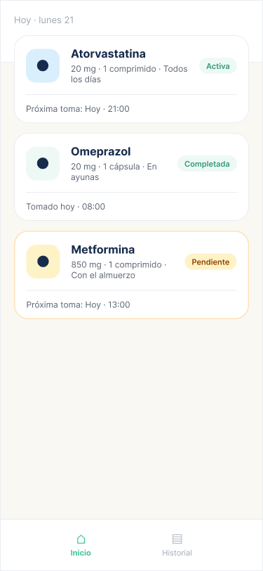
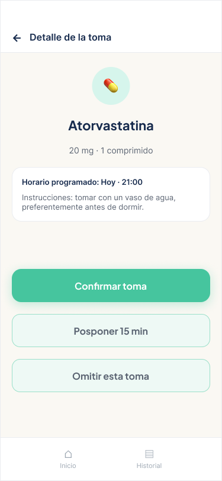
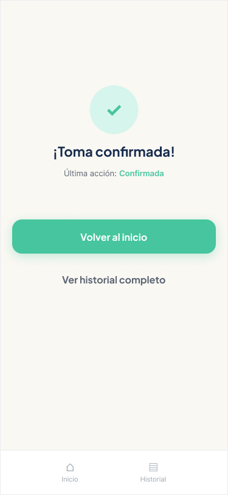
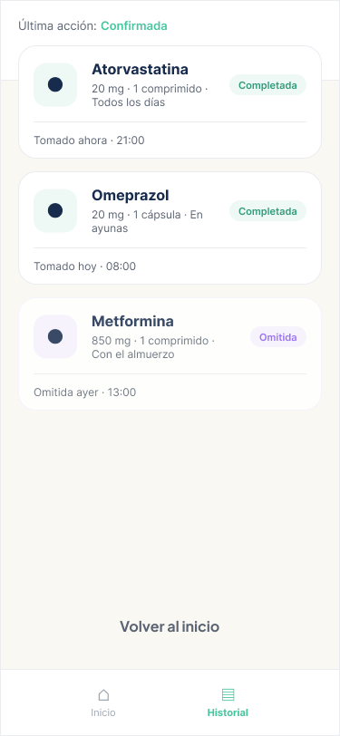
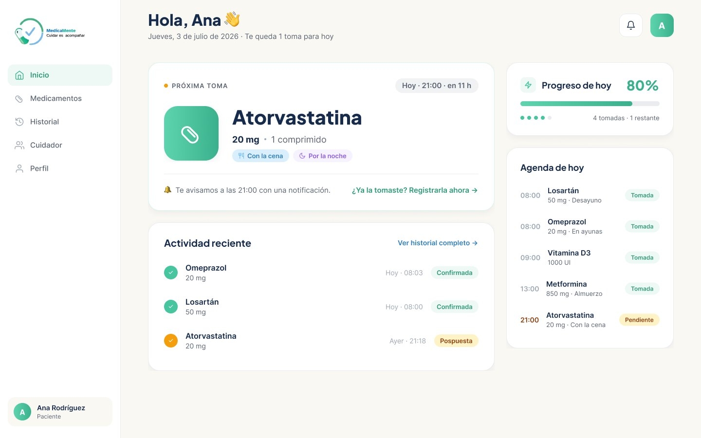
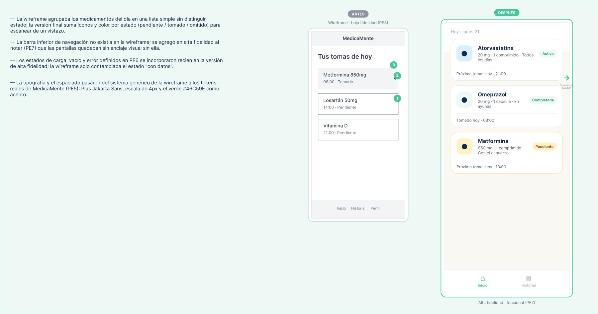
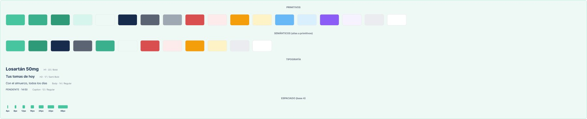

Caso de estudio · MedTech
MedicaMente
Que ninguna persona mayor que gestiona sola su medicación tenga que adivinar si ya tomó una dosis.
Resultados en una mirada
- O1 primeroPrioricé 5 oportunidades con RICE: registrar la toma en el momento ganó 80 a 37,5 y es condición de las demás.
- 57,9 %de misclicks al confirmar la toma en mobile (80 % de éxito) contra 11,1 % en desktop (100 %): el problema era la jerarquía de acciones.
- 3 hallazgospriorizados por severidad y aplicados en el prototipo (crítico, mayor y menor).
- 2 flujoscompletos y navegables de punta a punta, en mobile y en desktop.
Test no moderado en Maze con 5 participantes por versión. Es una muestra chica: indica dónde mirar, no prueba el comportamiento en uso real.
01 · Problema
El olvido es conocido. La duda posterior, no.
Las personas mayores polimedicadas que gestionan su medicación solas no tienen una manera confiable de saber si ya tomaron una dosis. Ante la duda, la omiten o la repiten.
- En enfermedades crónicas, la adherencia ronda en promedio el 50 % en países desarrollados (OMS, 2003).
- El 42,3 % de los afiliados de PAMI estudiados toma cinco o más medicamentos (Universidad Nacional de Rosario, 2.231 afiliados).
- Los centros de toxicología describen como causa habitual de doble dosis olvidar que la dosis ya se había tomado (National Capital Poison Center).
La oportunidad. Recordar y registrar ya existe (por ejemplo, Medisafe). Lo que falta es que el registro sea confiable para este segmento: que refleje lo que pasó y que la persona le crea cuando aparece la duda.
Usuaria principal
60 años o más, con varios medicamentos crónicos en distintos horarios. Usa el celular para tareas básicas y quiere sostener su independencia.
Actor secundario
Familiar o cuidador que acompaña a distancia. Busca tranquilidad sin invadir la autonomía de la persona.
02 · Proceso
Antes de dibujar, decidir qué problema resolver
Principios
Certeza antes que funciones. Autonomía antes que control. Esfuerzo mínimo para registrar. El producto no indica: deriva al profesional.
Dependencias
El valor central depende de tres eslabones que el producto no controla del todo: que la persona registre, que el aviso llegue y que el tratamiento esté bien cargado.
Priorización
Elegí RICE porque hace explícita la confianza: casi todos los supuestos estaban sin validar. Ganó «registrar en el momento de la toma».
Job Map
El dolor se siente al Confirmar («¿ya la tomé?») pero se origina al Concluir: si la toma no deja constancia, no hay nada que consultar.
03 · Solución
Registrar la toma en un paso y responder la duda de un vistazo
El flujo principal va de la notificación a la confirmación y deja la toma visible en el inicio y en el historial, con el estado de cada medicamento.





Versión desktop (1440 px, grilla de 12 columnas): próxima toma, progreso del día y agenda.
Del wireframe a la alta fidelidad

La lista sin estados del wireframe pasó a tarjetas con ícono y color por estado (pendiente, tomada, omitida), navegación inferior y estados de carga, vacío y error.
Sistema de diseño

Tokens primitivos y semánticos, Plus Jakarta Sans y una escala de espaciado de 4 px, con un solo color de acento en todo el producto.
04 · Validación
Qué mostró el test y qué cambié
| Hallazgo | Severidad | Cambio aplicado |
|---|---|---|
| Confirmar la toma en mobile: 80 % de éxito, 1 de 5 abandonó y 57,9 % de misclicks. En desktop la misma tarea llegó al 100 %. | Crítico | Separé el botón principal de las acciones secundarias: Posponer y Omitir pasaron a tener borde visible y fondo sutil. |
| La notificación no se reconoce enseguida como entrada al flujo: 37,5 % de misclicks en mobile y la tarea más lenta. | Mayor | La notificación suma la acción visible «Confirmar toma» y sigue siendo tocable en toda su superficie. |
| Desde «Listo», 1 de 5 fue al Historial antes que a Inicio; en desktop, 20 % de abandono. | Menor | «Volver al inicio» queda como única acción principal y «Ver historial completo» pasa a link de texto. |
05 · Aprendizajes y próximos pasos
Lo que sé y lo que todavía no
- La jerarquía visual pesa más en mobile. La misma tarea funcionó en desktop y falló en mobile: el problema no era el flujo sino cuántas acciones competían en la pantalla.
- Priorizar con la confianza a la vista evitó elegir la oportunidad que parecía más grande pero no tenía evidencia.
- Lo que falta validar: que la persona registre en el momento y lo sostenga en el tiempo, y con qué frecuencia aparece la duda. El próximo paso es un estudio de diario con usuarias del segmento.